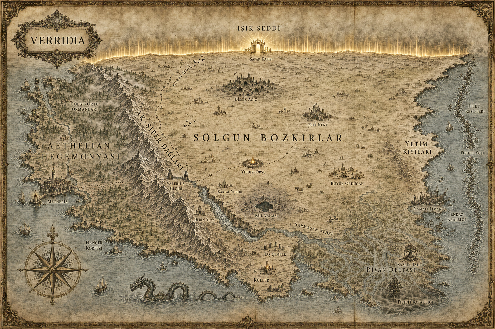

VERRIDIA
0

Kuzeyi ışıkla mühürlü, üç yanı okyanus
VERRIDIA
Kendi kendine kilitlenmiş bir dünya — ve kaçacak yer yok.
VERRIDIA
Dünya
Dört Yol
Kitabı Oku
+
−
⌂
Sürükle · Yakınlaş · Noktalara dokun
Tıkla — sinematik geçiş
✕